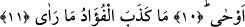

GÖRDÜĞÜNÜ,
KALBİ YALANLAMADI
Bismillâhirrahmânirrahîm
1. Battığı zaman yıldıza andolsun ki,
2. Arkadaşınız (Muhammed) sapmadı ve bâtıla inanmadı;
3. O, arzusuna göre de konuşmaz.
4. O (bildirdikleri) vahyedilenden başkası değildir.
5. Çünkü onu güçlü kuvvetli biri (Cebrâîl) öğretti.
6. Ve üstün yaratılışlı (melek) asıl şekliyle doğruldu.
7. Kendisi en yüksek ufukta iken.
8. Sonra (Muhammed’e) yaklaştı, derken daha da yaklaştı.
9. O kadar ki, iki yay arası kadar, hattâ daha da yakın oldu.
10. Bunun üzerine Allah, kuluna vahyini bildirdi.
11. (Gözleriyle) gördüğünü kalbi yalanlamadı.
Necm sûresi, Rasûlullah (s.a.) tarafından Harem-i şerif’te müşriklerin duyacağı
şekilde cehren okuyup ilan ettiği ilk sûredir. Hicretin beşinci senesi Ramazan ayında
nâzil oldu. Rivâyete göre Rasûlullah (s.a.) bu sûreyi okuyup da secde âyetine geldiğinde
onunla birlikte bütün mümin, müşrik, cin ve ins secde ettiği halde Ebû Leheb secde
etmemiştir. Yerden bir avuç toprak alıp alnına götürerek secde etmiş ve: “Bu bana
yeterlidir” demiştir. Başka bir rivâyete göre de bunu Velîd b. Muğîre yapmıştır. Buna
sebep olarak secde yapamayacak kadar yaşlı olduğu bildirilmektedir. Ümeyye b.
Halef’in doğruladığı bir başka rivâyete göre ise müşriklerin hepsi böyle yapmışlardır.
Bunlardan bir kısmının tekebbür, bazılarının âcizlik, bazılarının da yaşlılık sebebiyle
avuçlarına aldıkları toprağa secde etmiş olabilecekleri düşünülebilir. Ebû Leheb
tekebbür sebebiyle avucuna aldığı toprağa secde edenlerden biridir. Çünkü İbn Mes’ûd